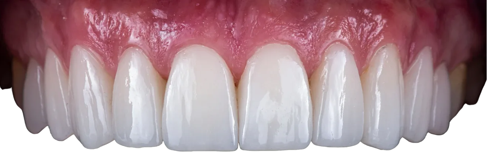
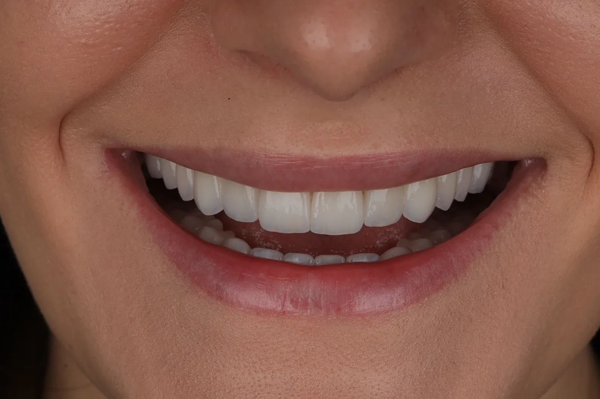

Torne-se um dentista reconhecido e valorizado por meio das lentes de porcelana.
Você faz o preparo. O laboratório faz a peça.
Quando ela chega, não é o que você planejou.
Você sabe que está ruim, mas não sabia dizer o porquê...

O padrão que você vai aprender, caso a caso.
+324profissionais treinados por nós atendem no Brasil todo com o mesmo padrão de qualidade.
Esteja onde estiver na porcelana
Comece com segurança: saiba quais casos aceitar, como planejar e o que pedir ao laboratório desde o primeiro paciente.
Eleve o padrão: resultados mais naturais, menos retrabalho e domínio dos casos complexos, que são os de maior valor.
Felipe e Bruna Veiga
Fundadores da Nive Odontologia: clínica e laboratório sob o mesmo teto.
Felipe Veiga, cirurgião-dentista, e Bruna Veiga, ceramista. Na formação você aprende os dois lados da mesma lente.
O conteúdo
9 módulos, +50 aulas e certificado de conclusão.
- {{ l }}
Travou num caso? Fale direto com a gente.
O suporte é pelo WhatsApp, com a Bruna e o Felipe. Envie fotos dos seus casos e receba acompanhamento e direcionamento.

Bruna, a peça chegou assim. Aceito ou peço ajuste?Plástica Gengival do Básico ao Avançado
com a Dra. Juliana Pereira e o Dr. Felipe Veiga
Daqui a um ano, onde você quer estar?
Se nada mudar, os próximos 12 meses vão ser parecidos com os últimos.
Garanta sua vaga
Garantia incondicional. Assista às primeiras aulas. Não gostou, devolvemos 100% do seu dinheiro.
Perguntas frequentes
{{ f.a }}
Seu próximo caso pode sair do jeito que você planejou.
Do briefing à cimentação, com o método da Nive e suporte direto de quem faz a clínica e o laboratório.